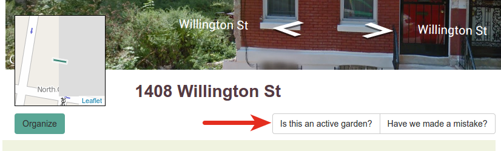

Stewards
What is a steward?
When a lot is being used by a group, we say that the group is stewarding that lot. This is represented by a steward project in the system. Depending on the situation, you might more likely call a "steward project" a "community garden" or something similar, but here we opt for the former as it is more generic.
How is a steward added?
Before a steward project is created, a steward notification is created when someone enters the information for the project online from a lot's page.
A steward notification is created once someone clicks this button and fills out the form that follows:

Stewards are moderated, so they won't show up instantly. The facilitator for your Living Lots site will get an email when someone adds themself and once that is approved the steward project will be added to the lot.